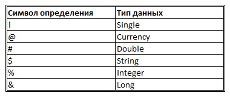

Как объявить переменную? Объявление переменных в VBA
Подробности
Категория: Основы VBA
Опубликовано: 08 октября 2012
Что такое переменная?
Имя, которое задается области компьютерной памяти и используется для хранения данных, называется переменной. Переменные обеспечивают возможность временно сохранять данные в компьютерной программе и этими данными манипулировать. Переменные в операторах VBA, это практически тоже самое, что и переменные в алгебраических уравнениях. В переменных могут содержаться числа, текстовые данные или другая информация, которая во время написания оператора не известна, но будет доступна при его выполнении. При появлении имени переменной в операторе, VBA подставляет в этот оператор фактическое значение, которое хранится в текущий момент в области памяти.
Требования к именам переменных
При выборе имен для переменных необходимо руководствоваться следующими правилами:
- имена переменных должны начинаться с буквы;
- после первой буквы можно использовать любые сочетания букв, цифр и символов подчеркивания (_);
- в именах переменных не могут содержаться пробелы, точки и символы, используемые VBA для обозначения математических действий и операций сравнения;
- имя переменной не может превышать 255 символов;
- имена переменных не должны повторять ключевые слова VBA;
- имя переменной (идентификатор) должно быть уникальным в пределах его области действия.
Кроме того, имена переменных не различают состояние регистра. Имена FirstRow и firstrow представляют для VBA одно и то же. При выборе имен переменных следует делать их максимально информативными.
Неявное объявление переменных (implicit variable declaration)
Использование переменной в операторе VBAП является простейшим способом создания этой переменной. Такое создание переменной называется неявным объявлением переменной. Использование переменной в операторе, неявно указывает (объявляет) VBA о создании этой переменной. Когда переменная впервые появляется в операторе, VBA создает переменную, при этом для нее резервируется область памяти. Переменные, созданные неявным объявлением, всегда имеют тип данных Variant. Не смотря на удобство, неявное объявление переменных имеет определенные недостатки. Напрмер, вы можете дважды неявно объявить одну и ту же переменную, думая, что объявляете новую и при этом потерять ранее сохраненное значение. При неявном объявлении переменных могут возникать и другие проблемы, которые впоследствии очень трудно обнаружить. Кроме того, при таком объявлении замедляется скорость выполнения программного кода.
Явное объявление переменных (explicit variable declaration)
Visual Basic for Application предоставляет возможность выполнять явное объявление переменных. Для того чтобы явно объявить переменную используется VBA-оператор Dim (сокращение от слова Dimension). Все переменные, которые создаются с этой формой ключевого слова Dim, являются переменными типа Variant. Для явного объявления переменной используется следующий синтаксис:
Этот оператор указывает VBA создать переменную с именем MyVar.
Переменная объявляется только один раз в отдельной процедуре или модуле. Хорошим правилом считается все явные объявления переменных производить в одном месте в начале процедуры. Явное объявление переменных имеет ряд преимуществ перед неявным:
- ускоряется выполнение программного кода;
- уменьшение количества ошибок в результате неправильного написания имен переменных;
- код становится более читабельным и понятным;
- нормализация использования переменных с заглавными буквами в именах.
Задание типа данных переменной
Независимо от того, объявляются ли переменные явно или неявно, все они являются переменными типа Variant, если только не задается другой тип переменной в объявляющем ее операторе. Объявление переменной, при котором задается тип переменной, называется типизированным объявлением переменной. Типизированное объявление переменной имеет следующий синтаксис:
При типизированном объявлении переменной используется один из нескольких типов данных VBA.
При таком объявлении переменных имеет несколько преимуществ:
- ускоряется выполнение кода программ;
- повышается эффективность кода и сокращается объем памяти, требуемый для программы;
- легче читается и воспринимается программный код;
- легче обнаруживаются некоторые типы ошибок.
Использование специальных символов определения типа для объявления переменных
Существует еще один способ объявления переменных, при помощи специальных символов: !, @, #, $, %, &. Эти символы называют символами определения типа. В более ранних разновидностях Basic такой способ определения переменных был единственно возможным, сейчас же использование оператора Dim с ключевым словом As делает определение типа переменной проще и понятнее. Тем не менее, при неявном объявлении переменной можно задать ее тип, добавив специальный символ в конец имени переменной. При этом этот символ необходимо будет добавлять каждый раз, когда используется имя переменной, иначе будет возникать runtime-ошибка. В таблице приведено соответствие между символами определения и типами данных.
Таким образом, результат действия процедуры с явным объявлением переменной
2.Dim HelloMsg As String
3.HelloMsg = "Hello, Excel!"
4.MsgBox HelloMsg
5.End Sub
будет таким-же как и результат действия с неявным объявлением переменной при помощи символа определения типа.
2.HelloMsg$ = "Hello, Excel!"
3.MsgBox HelloMsg$
4.End Sub
Другие материалы по теме: